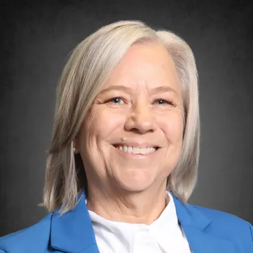

Staff
Kimberly Whitt
Chief Executive Officer. Kim's background includes child welfare, food distribution, and Prison Fellowship. She knows how to work with community resources and government agencies, which lets Xtreme SOULutions stay lean: a small staff and a deep bench of volunteers.